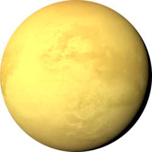
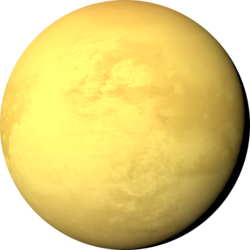
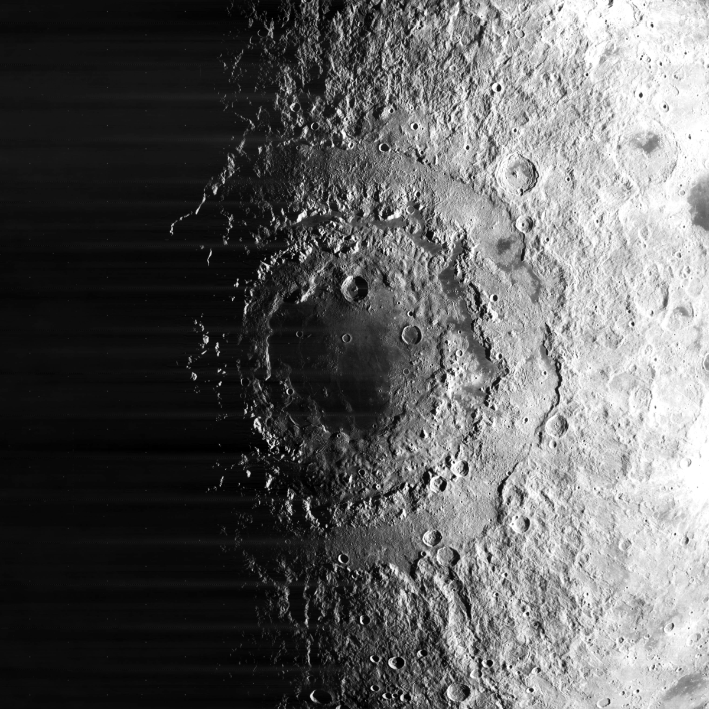

While I am into all things space, I find planets especially captivating. I have interned at the NASA Jet Propulsion Laboratory during the summers of 2018-2021. I work with my mentor, Catherine Elder, to study the regolith layer of the Moon using rock abundance surrounding Cold-Spot Craters. I am working on a scientific paper reporting my findings on the varying depth of the regolith layer, which helps us understand the geologic history of the Moon.
